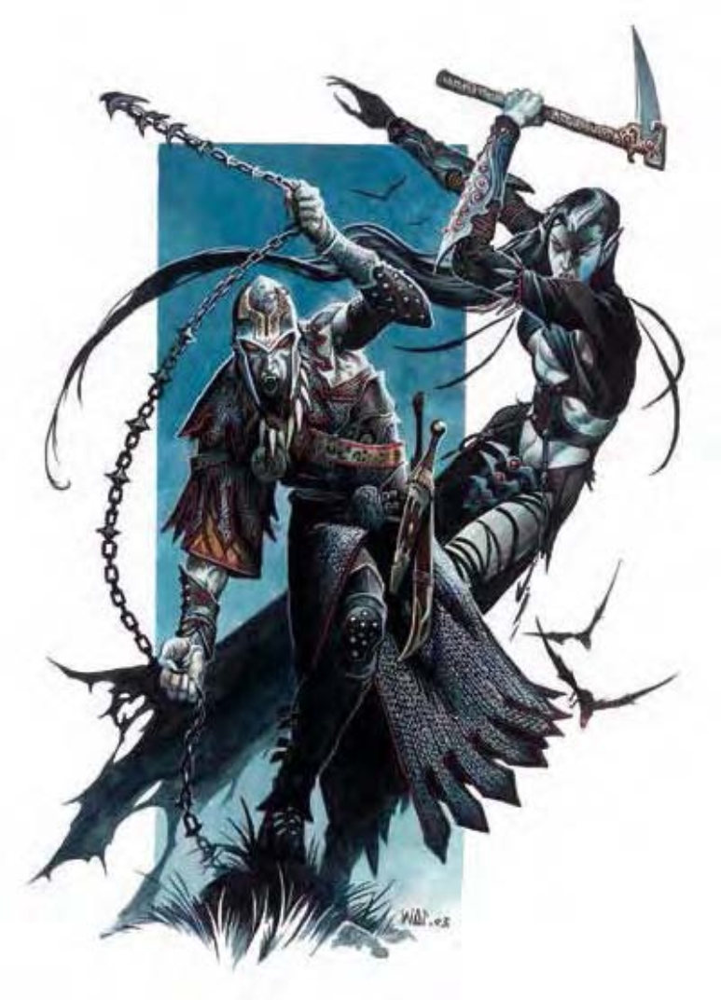

吸血鬼是横行黑夜的掠食者，虽然永远离不开被诅咒的棺材或墓穴，他们还是不断设计种种阴谋以取得更强大的能力或创造更多子嗣腐化世界。
成为吸血鬼之后，外貌和原本活着的时候没有太大差异，但五官会变得较为凶残而带有野性，就像猎食的狼一样。与巫妖相同，吸血鬼偏好带点颓废的华丽衣着，其喜欢自命为贵族。虽然外貌近似人类，吸血鬼却有个显而易见的重要特征：他们没有影子，在镜子里也不会有倒影。
吸血鬼通晓的语言和生前相同。
前方出现的战士显然来意不善，他的皮肤苍白，双眼血红，表情带着野性，身上穿着链甲，锋利的指爪紧握一条带刺的锁链。
下述范例以5级人类战士当作基底生物。
| 资料栏位 | 5级人类战士吸血鬼 中型不死生物（强力人形生物） |
| 生命骰 | 5d12 (32HP) |
| 先攻 | +7 |
| 速度 | 30英尺 (6格) |
| 防御等级 | 23 (+3敏捷、+6天生、+4精制链甲衫)、接触13、措手不及20 |
| 基本攻击/擒抱 | +5 / +11 |
| 攻击 | 挥击+11近战 (1d6+9附加吸能)；或"+1刺链"+13近战 (2d4+12)；或精制短弓+9远程 (1d6 / x3) |
| 全力攻击 | 挥击+11近战 (1d6+9附加吸能)；或"+1刺链"+13近战 (2d4+12)；或精制短弓+9远程 (1d6 / x3) |
| 占据/触及 | 5英尺 / 5英尺 (使用刺链时10英尺) |
| 特殊攻击 | 吸血、夜之子、产生衍体、支配、吸能 |
| 特殊能力 | 化形、伤害减免10/银和魔法、黑暗视觉60英尺、快速医疗5、气化形体、寒冷抗力10、电击抗力10、蛛行、不死特性、吸血鬼弱点 |
| 豁免 | 强韧+4、反射+6、意志+4 |
| 属性 | 力量22、敏捷17、体质―、智力12、感知16、魅力12 |
| 技能 | 哄骗+9、攀爬+10、躲藏+10、聆听+17、潜行+10、骑术+11、搜索+9、察言观色+11、侦察+17 |
| 专长 | 警觉B、盲战、战斗反射B、闪避B、擅长奇特武器 (刺链)、精通先攻B、快速反射B、灵活移动、猛力攻击、专攻武器 (刺链)、武器专精 (刺链) |
| 环境 | 温带平原 |
| 组织 | 单独 |
| 挑战级数 | 7 |
| 宝藏 | 双倍标准 |
| 阵营 | 总是邪恶（任何） |
| 进化 | 视人物职业而定 |
| 等级修正值 | +5 |
在计算伤害减免时，吸血鬼的挥击视为魔法武器。
对抗吸血鬼支配能力的意志检定DC=13。遭到吸能时，移除负向等级的强韧检定DC=13。
持有物："+1刺链"、精制链甲衫、加速药水。
下述范例以半精灵9级武僧／4级黑影舞者当作基底生物。
精英吸血鬼、13级半精灵武僧／影舞者
| 资料栏位 | 精英吸血鬼 中型不死生物（强力人形生物） |
| 生命骰 | 13d12 (90HP) |
| 先攻 | +8 |
| 速度 | 60英尺 (12格) |
| 防御等级 | 32 (+4敏捷、+6天生、+6感知、+1"木质"、+3防御护腕、+2防护戒指)、接触23、措手不及32 |
| 基本攻击/擒抱 | +9 / +14 |
| 攻击 | 徒手击打+14近战 (1d10+5附加吸能)；或"+2锋利单镰"+16近战 (1d6+7)；或"+1冻寒投石索"+14远程 (1d4+1附加1d6寒冷) |
| 全力攻击 | 徒手击打+14 / +14 / +9近战 (1d10+5附加吸能)；或"+2锋利单镰"+16 / +16 / +11近战 (1d6+7)；或"+1冻寒投石索"+14远程 (1d4+1附加1d6寒冷) |
| 占据/触及 | 5英尺 / 5英尺 |
| 特殊攻击 | 吸血、夜之子、产生衍体、支配、吸能、极速连击、斗气击 (魔法)、"阴影幻术"、"召唤幽影" |
| 特殊能力 | 化形、伤害减免10/银且魔法、黑暗视觉60英尺、快速医疗5、气化形体、半精灵特性、躲藏目光、精通反射闪避、百病不侵、寒冷抗力10、电击抗力10、"阴影跳跃"20英尺、轻身坠40英尺、蛛行、心如止水、直觉闪避 (AC保有敏捷加值)、不死特性、吸血鬼弱点、混元体 |
| 豁免 | 强韧+7、反射+16、意志+13 |
| 属性 | 力量20、敏捷19、体质―、智力12、感知22、魅力12 |
| 技能 | 平衡感+22、哄骗+9、攀爬+9、躲藏+28、跳跃+23、聆听+16、潜行+28、表演 (管乐器) +7、搜索+9、察言观色+14、侦察+16、特技动作+22 |
| 专长 | 警觉、盲战、战斗反射、挡御飞箭B、闪避、精通先攻、精通卸除武器B、快速反射、灵活移动、跳跃攻击、震慑拳B |
| 环境 | 温带森林 |
| 组织 | 单独 |
| 挑战级数 | 15 |
| 宝藏 | 双倍标准 |
| 阵营 | 总是邪恶（任何） |
| 进化 | 视人物职业而定 |
| 等级修正值 | +8 |
在计算伤害减免时，吸血鬼的徒手击打视为魔法武器。
对抗吸血鬼支配能力的意志检定DC=17。遭到吸能时，移除负向等级的强韧检定DC=17。
极速连击 (特异)：使用徒手击打或武僧专用武器进行全力攻击时，每轮可以多攻击一次，该次攻击加值等于其最高基本攻击加值。在此例中，极速连击必须使用徒手击打或+2锋利单镰。
斗气击 (超自然)：攻击具有伤害减免能力的生物时，徒手打击视为魔法武器。
"阴影幻术" (类法术能力)：通过周遭阴影创造出视觉幻术，效果如同"无声幻影"法术，每天可使用1次。
"召唤幽影" (类法术能力)：召唤一个不会被他人驱散、斥喝或命令的幽影伙伴。若幽影伙伴被消灭或遣散，影舞者必须进行强韧检定 (DC=15)，若检定失败，会损失800点经验值。若检定成功，损失400点经验值。必须经过一年又一天才能重新召唤幽影。
半精灵特性 (特异)：对"睡眠术"效果免疫；对抗附魔系法术和效果的豁免检定可获得+2种族加值；昏暗视觉 (在暗照明条件下可以看到人类视觉两倍远的距离)；在进行"聆听"、"侦察"和"搜索"检定时具有+1种族加值 (数据中已计入此项加值)；在进行"交涉"和"搜集信息"检定时具有+2种族加值。
躲藏目光 (超自然)：即使被人看见，只要身边10英尺内有阴影，就可以使用"躲藏"技能，不需要实体的掩蔽。
精通反射闪避 (特异)：有些攻击效果在通过反射检定时仍会造成一半伤害，此时，吸血鬼若通过反射检定则完全不会受伤。而若未通过反射检定，也只会受到一半伤害。
百病不侵 (特异)：对所有疾病免疫，除了超自然或魔法造成的疾病外，如：腐尸症、兽化等。
阴影跳跃 (类法术能力)：在阴影之间移动，效果如同"任意门"法术，每天可以跳跃最多20英尺。
轻身坠 (特异)：武僧利用身旁的墙壁减缓落下的速度。计算坠落伤害时，高度-40英尺。
心如止水 (特异)：对抗附魔系法术和效果的豁免检定可获得+2加值。
混元体 (超自然)：每天可以自我治疗最多18点生命值。
持有物："+2锋利单镰"、"+1冻寒投石索"、10颗"+1投石索弹丸"、"+2防护戒指"、"+3防御护腕"、"+4感知护符"。
吸血鬼是一种后天模板，可以套用在任何人形生物或人形怪物上 (被套用的生物称为基底生物)。
除了此处所列说明之外，吸血鬼所有数据和特殊能力都比照基底生物。
体型及种类：体型不变。生物种类变为不死生物（强力人形生物或强力人形怪物）。毋须重算其基本攻击加值、豁免检定或技能点数。
生命骰：将现有与将来的HD改为d12。
速度：与基底生物相同。若原本具有游泳速度，成为吸血鬼之后仍保有此能力，而且不会因为浸泡在流动的水中而受伤 (详见以下说明)。
防御等级：基底生物的天生防御加值增加+6。
攻击：吸血鬼保有基底生物所有攻击方式，若原本没有天生武器，则会得到挥击攻击。如果基底生物能够使用武器，吸血鬼也能。原本具有天生武器的生物也保有这些攻击。未持用武器时，吸血鬼可以用挥击或主要天生武器 (如果有的话) 进行攻击。持用武器时，则可以选择使用挥击或武器攻击。
全力攻击：未持用武器时，吸血鬼可以用挥击 (见以上说明) 或天生武器 (如果有的话) 进行全力攻击。持用武器时，通常以武器当作主要攻击，挥击或天生武器作为次要攻击。
伤害：若基底生物原本没有天生武器，成为吸血鬼之后可以使用挥击攻击，伤害值与体型有关，详细数据如下表。对原本具有天生武器的生物而言，攻击方式不变，如果表中数据高于天生武器伤害值，则以下表数据作为新的伤害值。
| 体型 | 伤害 |
| 超微型 | 1 |
| 微型 | 1d2 |
| 超小型 | 1d3 |
| 小型 | 1d4 |
| 中型 | 1d6 |
| 大型 | 1d8 |
| 超大型 | 2d6 |
| 巨型 | 2d8 |
| 超巨型 | 4d6 |
特殊攻击：吸血鬼保有基底生物原本的所有特殊攻击，另外还会获得下列特殊攻击：除非特别注明，豁免检定的DC=10加吸血鬼生命骰的一半加吸血鬼魅力调整值。
吸血 (特异)：只要通过擒抱检定，吸血鬼的利齿能够咬穿活物的血管，藉此吸取血液。如果能够压制敌人，每轮都会自动吸血，吸取1d4点体质。每次吸血成功，吸血鬼本身会获得5点暂时生命值。
夜之子 (超自然)：吸血鬼能够驱使世间诸般低等生物。每天1次，花费一个标准动作，吸血鬼可以呼唤1d6+1个鼠群、1d4+1个蝙蝠群或一批3d6只狼 (若基底生物并非原生于类似地球的环境，会召唤其他威力相当的生物)。使用能力之后，这些生物需要2d6轮才会出现，持续对吸血鬼效命1小时。
支配 (超自然)：只要目光相接，吸血鬼就能使敌人的意志力崩溃。此能力与凝视攻击类似，但吸血鬼必须花费一个标准动作主动注视敌人。光是看见吸血鬼并不会受害。遭到支配能力攻击的生物必须通过意志检定，否则会听从吸血鬼的命令，效果与"支配人类"法术相同 (施法者等级12)。此能力范围可达30英尺。
产生衍体 (超自然)：若人形生物或人形怪物被吸血鬼的吸能攻击所杀害，下葬后1d4天会复活成为吸血衍体 (见第272页关于吸血衍体的说明)。另一方面，若被吸血而导致体质值等于或低于0，生命骰4以下的生物会复活成为吸血衍体，而生命骰5以上的生物则复活成为吸血鬼。无论原因为何，一但成为吸血鬼或吸血衍体，就会受到创造者的奴役，听从其指挥，直到主人被消灭为止。单一吸血鬼能奴役的个体数量上限等于本身生命骰的两倍。数量超过之后，新创造的吸血鬼或吸血衍体就不受奴役，保有自由意志。受奴役的吸血鬼还可以再创造并奴役其他吸血鬼或吸血衍体。因此，吸血鬼首领可以通过这种方式间接奴役一大群吸血鬼。吸血鬼可以自愿放弃奴役某些衍体，以便创造新的衍体。然而一旦重获自由，吸血鬼或吸血衍体就不会再被奴役。
吸能 (超自然)：被吸血鬼的挥击 (或其他天生武器) 击中的活物会得到两个负向等级。每造成1个负向等级，吸血鬼获得5点暂时生命值。此能力每轮只能使用1次。
特殊能力：吸血鬼保有基底生物原本的所有特殊能力，另外还会获得下列特殊能力：
化形 (超自然)：吸血鬼可以用标准动作化为蝙蝠、凶暴蝙蝠、狼或凶暴狼 (若基底生物并非原生于类似地球的环境，可能会变身为其他形态)。效果与12级人物施展的"变形术"相同，但变身只限于上述形态，也不会获得生命值。变身后的吸血鬼不能使用天生挥击攻击和支配能力，但会获得动物形态的特殊攻击方式。吸血鬼可持续保持变形形态，直到决定变回、更换形态或次日日出为止。
伤害减免 (超自然)：吸血鬼的伤害减免能力为"10/银且魔法"。在计算伤害减免时，吸血鬼的天生武器视为魔法武器。
快速医疗 (特异)：只要目前生命值在1以上，吸血鬼每轮可以恢复5点伤害。若生命值降到0以下，吸血鬼会自动气化形体，设法逃离战斗。两小时之内若无法回到自己的棺材就会灰飞烟灭 (两小时可移动的距离约9英里)。因生命值过低而被迫气化形体的吸血鬼不会再受到任何伤害。回到棺材休息时，吸血鬼陷入无助状态。一小时后生命值恢复到1点并脱离无助状态，之后每轮可以恢复5点伤害。
气化形体 (超自然)：吸血鬼可以随意使用气化形体能力，属于标准动作，效果与同名法术相同 (施法者等级5)。但可以一直保持在气化状态，飞行速度20英尺，机动性灵活。
提升抗力 (特异)：吸血鬼具有寒冷抗力10和电击抗力10。
蛛行 (特异)：吸血鬼可以攀爬光滑的表面，效果与"蛛行术"相同。
驱散抗力 (特异)：吸血鬼具有+4驱散抗力。
属性：将基底生物的属性再加上以下加值：力量+6、敏捷+4、智力+2、感知+2、魅力+4。吸血鬼属于不死生物，所以没有体质值。
技能：吸血鬼在进行"哄骗"、"躲藏"、"聆听"、"潜行"、"搜索"、"察言观色"和"侦察"检定时具有+8种族加值。其他比照基底生物。
专长：只要基底生物符合先决条件，而且原本不具有该项专长，成为吸血鬼后具有"警觉"、"战斗反射"、"闪避"、"精通先攻"和"快速反射"专长。
环境：任何，通常跟基底生物相同。
组织：单独、成双、成队 (3-5) 或行列 (1-2，加上2-5只吸血衍体)
挑战级数：同基底生物再+2。
宝藏：双倍标准
阵营：总是邪恶（任何）
进化：视人物职业而定
等级修正值：基底生物的等级修正值+8。
虽然力量强大，吸血鬼也有许多弱点。
驱离吸血鬼：吸血鬼无法忍受大蒜的味道，因此也无法靠近吊挂许多大蒜的地方。同样地，吸血鬼也会不喜欢镜子或显而易见的圣徽。这些东西不能伤害吸血鬼，但可以用来驱离吸血鬼。被驱离的吸血鬼不能靠近持有镜子或圣徽的生物身边5英尺，在整场遭遇中也不能碰触或近战攻击该生物。驱离吸血鬼属于标准动作。
吸血鬼不能自行越过流动的水，但躺在棺材里或坐船载运过去则不受此限。除非所有人或居民允许，他们才能进入私人房屋或建筑物。公共场所则不受此限，毕竟这些地方本来就允许任何人出入。
杀死吸血鬼：生命值降到0或更低时，吸血鬼暂时失去行动能力，但不会毁灭 (见以上关于快速医疗的说明)。只有以下的攻击方式才能杀死吸血鬼。
直接曝晒于阳光下的吸血鬼会陷入迷乱，只能进行一个移动动作或攻击动作，如果无法逃离，下一轮就会灰飞烟灭。同样地，吸血鬼浸泡在流动的水中时，每轮会失去三分之一的生命值，持续浸泡三轮之后就会毁灭。
用木桩钉穿吸血鬼的心脏也可以杀死它。然而，只要躯体尚在，一旦木桩被移除，吸血鬼会立刻复活。为了彻底解决吸血鬼，通常会将头颅砍下，在嘴里塞满圣饼或类似物品。
吸血鬼必定属于邪恶阵营，因此，人物成为吸血鬼之后可能会失去特定职业能力，细节请参阅《玩家手册》第三章的说明。除此之外，某些职业还会受到额外的限制。
牧师：吸血鬼牧师不能驱散不死生物，只能斥喝不死生物。而且斥喝能力不会影响吸血鬼主人或主人所奴役的其他仆从。
吸血鬼牧师可由下列领域择二：混乱、破坏、邪恶或诡术。
术士与法师：成为吸血鬼之后，术士与法师可以保有职业特性，但若原有的魔宠并非鼠或蝙蝠，两者之间的情感连结会中断，魔宠会弃主人而去。人物可以再召唤新的魔宠，但只限于鼠或蝙蝠。